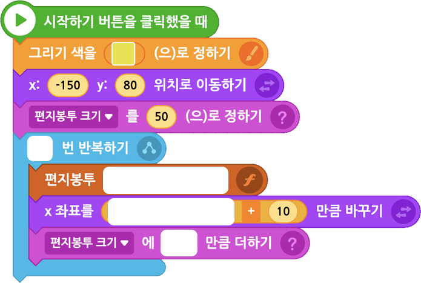

함수 활용하기 | 함수는 여러 가지 형태로 다양하게 응용할 수 있다. ‘편지봉투‘ 함수를 활용해 크기가 10씩 작아지는 편지봉투 프로그램을 작성해 보자.
다음 실행 화면을 참고하여 크기가 10씩 작아지는 편지봉투 프로그램을 완성해 보자.
실행 화면
- 오브젝트
-
연필(1)
칠판(2)
- 변수
-
편지봉투 크기
- 함수
-
편지봉투
‘편지봉투’ 함수 응용하기
1 ‘편지봉투’ 함수에 을 추가한다.
2‘편지봉투’ 함수의 달라진 부분을 확인한다.
3 움직이는 크기를 전달받을 블록을 드래그하여 넣는다.
아래 블록을 참고하여 프로그램을 작성해 보자.
연필(1)

이전
다음